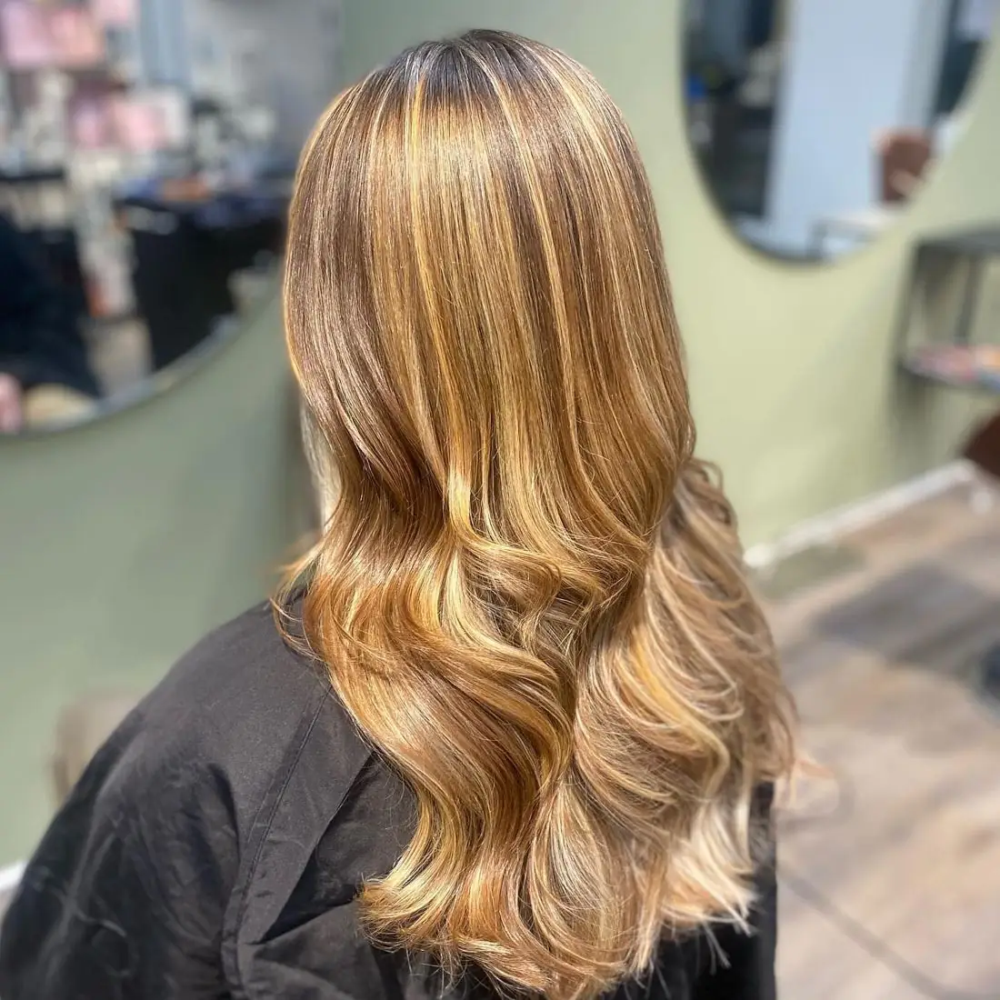

Balayage holder fast
Balayage er for længst blevet en klassiker. Farven males på i hånden og går gradvist fra rod til spids, så udgroningen bliver blød og naturlig. Det betyder færre besøg mellem farvningerne, og det er en stor del af forklaringen på, at teknikken bliver ved.
Smørblond og gyldne toner
Blonde nuancer bliver varmere: cremet, smøragtig blond med gyldne refleksioner frem for hvid platin. Det giver et solkysset udtryk, som klæder de fleste hudtoner og ser frisk ud hele vinteren.
Kobber og rødbrun
Kobber er efterårets farve. Den kan lægges som balayage med varme kobber- og ravtoner, eller som en helfarve for dig, der vil have et tydeligere skifte.

Dybere brunetter
Mange brunetter vælger at lægge dybde tilbage i håret efter en lys sommer. Rige, varme brune nuancer med lidt lys omkring ansigtet giver glans og ser dyrt ud.
Balayage, babylights eller helfarve?
- Balayage: blødt, naturligt farvespil med mindre markant udgroning.
- Babylights: meget fine lyse striber, der giver et detaljeret, lyst spil.
- Helfarve: en mere ensartet farve i hele håret.
Tag udgangspunkt i det resultat, du ønsker, ikke kun navnet på behandlingen. Vi rådgiver ud fra dit hårs farve, kvalitet og længde.